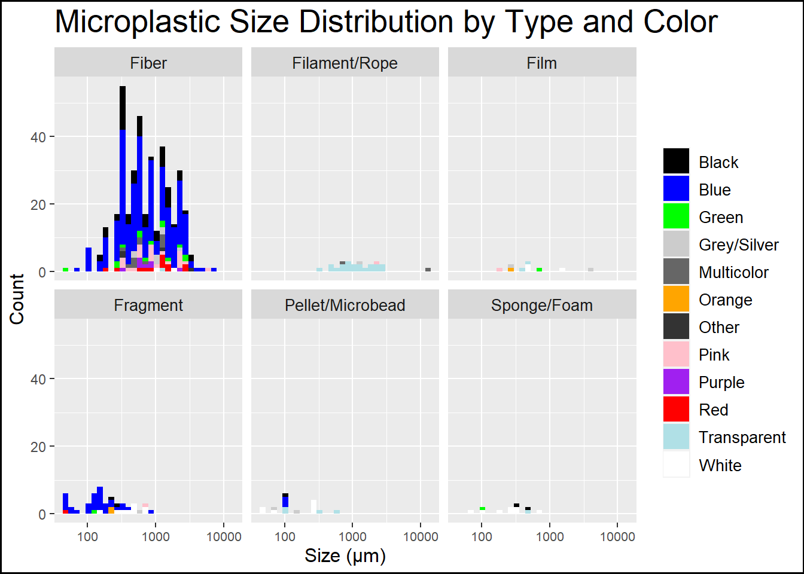
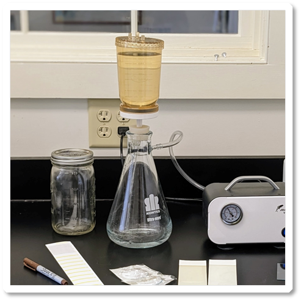
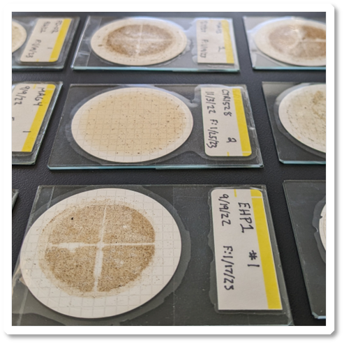
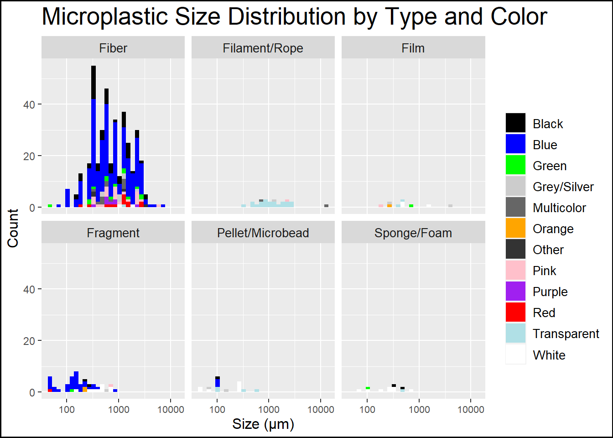
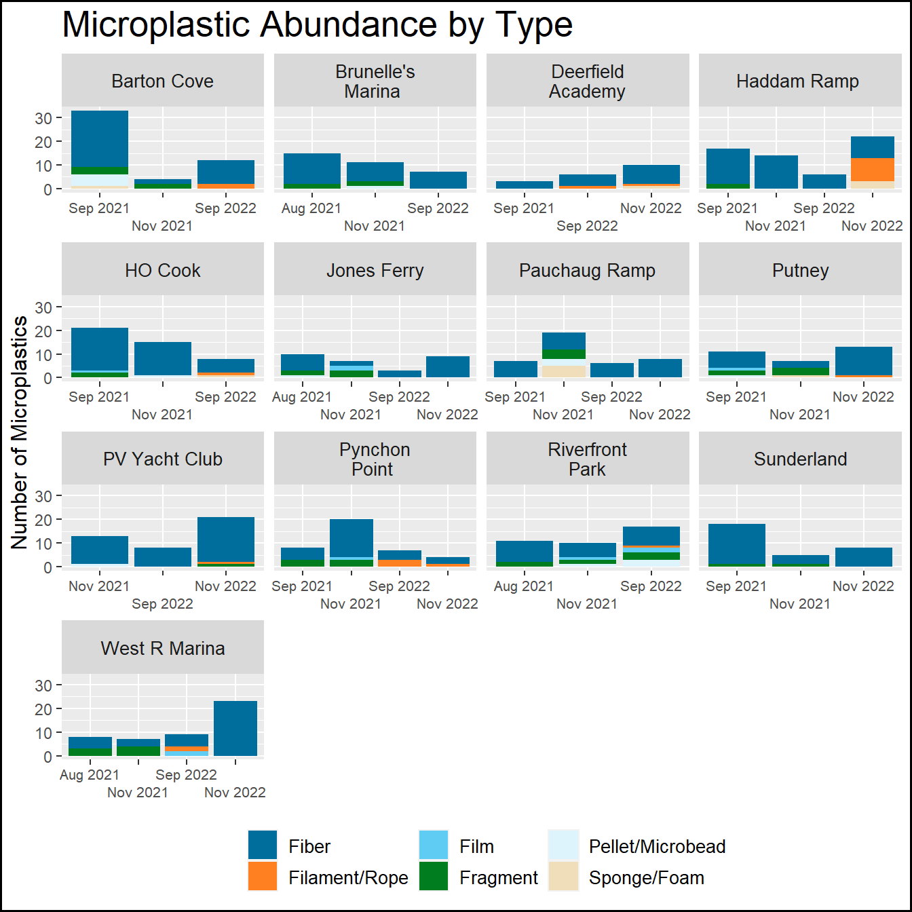
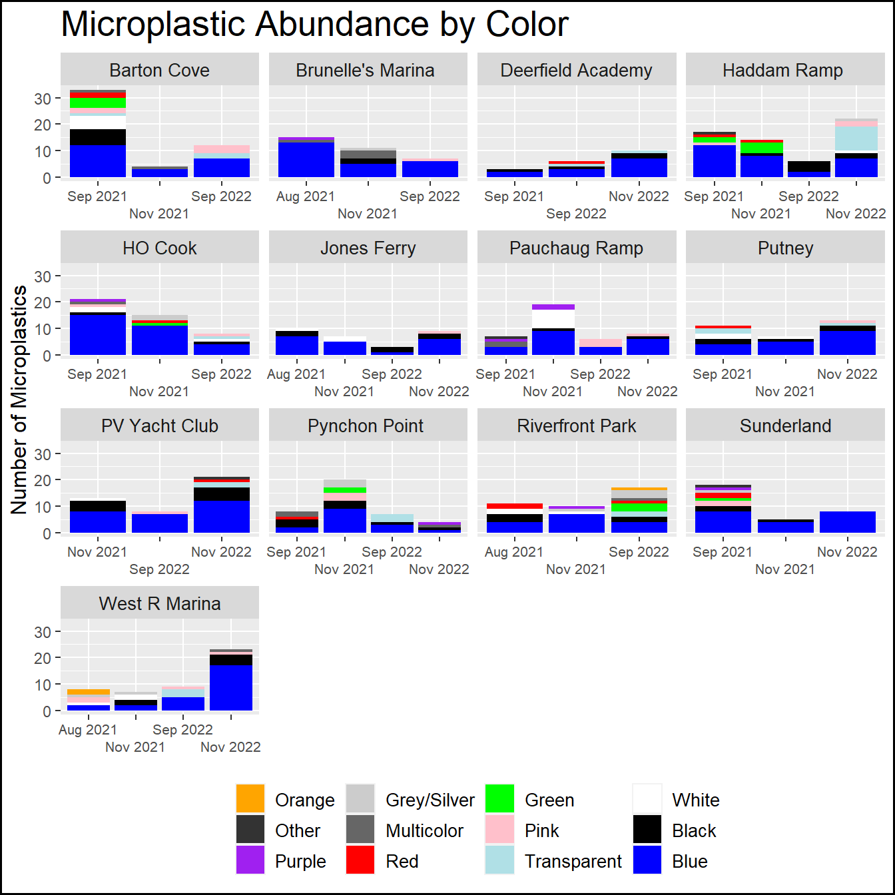
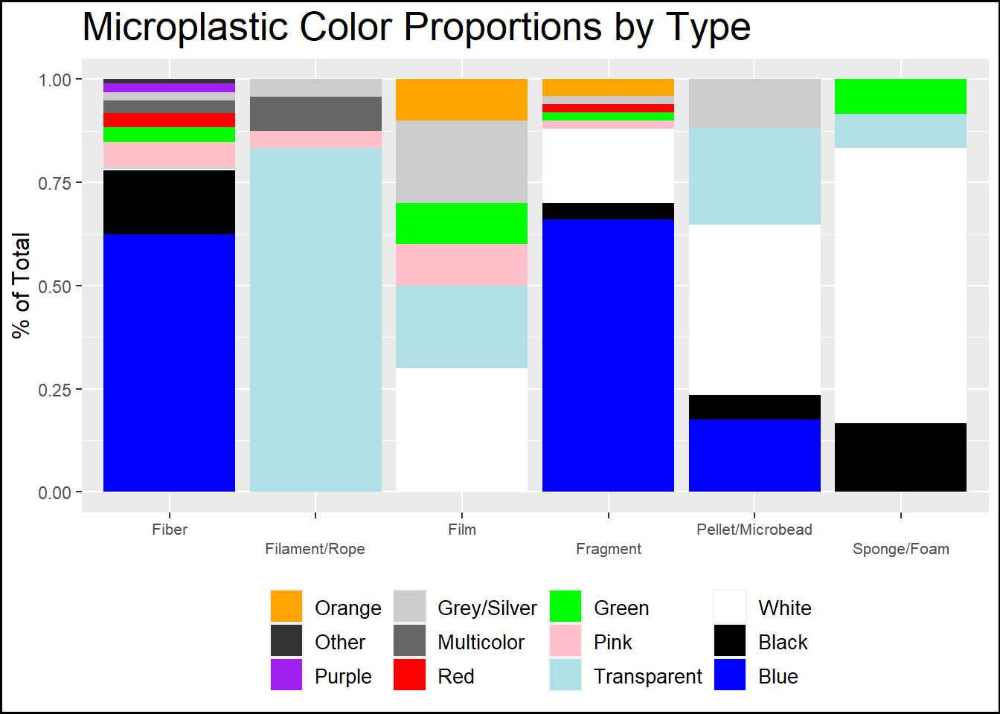

Warning: The `size` argument of `element_rect()` is deprecated as of ggplot2 3.4.0.
ℹ Please use the `linewidth` argument instead.
Connecticut River Conservancy (CRC) has been piloting a volunteer microplastics monitoring program in the Connecticut River watershed. CRC holds a watershed wide trash cleanup each year and our River Stewards work in each state to “stop trash before it starts” by advocating for legislation like bottle bills and extended producer responsibility. There was no existing data about plastic’s impact on our waterways to support this advocacy work. Our members have also expressed interest in understanding how emerging contaminants, such as microplastics, are present in the Connecticut River watershed. We have been working over the past two years to develop a program that engages volunteers and starts to fill this knowledge gap in a responsible way.
For this project, volunteers collected two samples each in 2021 and 2022 from the 13 sites pictured on the map below. Most sites were located on the mainstem Connecticut River. We also collected from 2 major tributaries, the Deerfield and West Rivers, and selected a remote headwater location in the HO Cook State Forest in Heath, MA. A few of our 2022 samples froze in our fridge and broke, so we unfortunately lost four samples. Thankfully, each of the samples that froze was from a different site, so we have at least one observation from every site for each year.

In the lab, we filtered samples using a vacuum pump and looked at the filters under a microscope. In 2021, filters were examined while still wet. In 2022, we fixed the filters to slides using forensic tape (think dusting for fingerprints…). Fixing the filters to the slide allows for the same exact view under the microscope for multiple viewers. It is our goal to have volunteers do the lab analysis as well, and using this technique gets us one step closer.


The lab analysists recorded each individual microplastic observed and classified it by type, size, and color. We found microplastics in every sample collected! The most common type of microplastic was fiber, most common size category was “Small Microplastic” (under 1 mm), and the most common color was blue. Another prominent type of microplastic of note was transparent filaments that we attribute primarily to small pieces of fishing line. Below are a series of charts that show what we found.
Warning: The `size` argument of `element_rect()` is deprecated as of ggplot2 3.4.0.
ℹ Please use the `linewidth` argument instead.
First, we have a look at the overall distribution of all the microplastics observed in all samples classified by type, size, and color. We can see that the majority of samples were fibers and that most of those were blue.

Here we have the distribution of five types at each site and sample. Refer to the map above to remind yourself where each site is located. The number of microplastics was variable at each site. Something of note is that it seems to be that sometimes a particular type other than fiber was found in greater numbers indicated a specific item like a piece of rope or styrofoam was degrading at the site.

Here we can see the distribution of colors found at each site and sample. As the first graph suggested, blue is the dominant color found across all the samples.

Here is a closer look at the proportions of different colors found in each of the types of microplastic. We noticed that the most likely color of filament or rope was transparent and it is likely due to bits of fishing line. We also found that foams were dominated by white, which is likely from styrofoam.
After two years of this program, we have found it valuable to have data on how microplastics are affecting us locally in the Connecticut River watershed. We plan to continue this program, perhaps expand our research to different research questions, and use this data to support our advocacy work around trash and plastics.